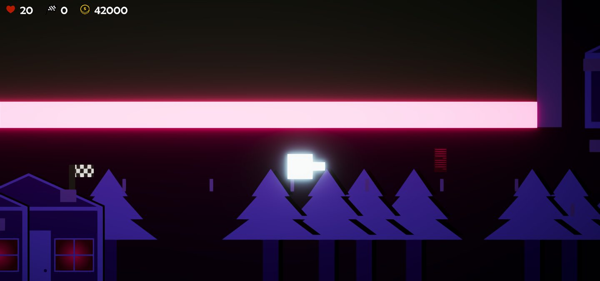

SCP 173 Simulator
Play as SCP 173 in a small SCP facility map. Now it's your turn to take revenge on the humans!
View gameWe make simple 2D and 3D games for fun, with a touch of creative spice.
Explore the games
In a world where bosses rule, how can a simple cube save the day? Maybe he has some secret powers we aren't aware of.
Meet the cubePlay as SCP 173 in a small SCP facility map. Now it's your turn to take revenge on the humans!
View game
A short 3D platformer where you play as an astronaut and collect 3 crystals!
View game
Choose an ability and see how it changes your next run. A small top-down shooter made for Brackeys Game Jam 2023.1 in 2 days!
View gameII Games is a small game development team. It’s just me for now, with more people joining soon.
We make games that are familiar and easy to understand, then add something a little different.
About II Games